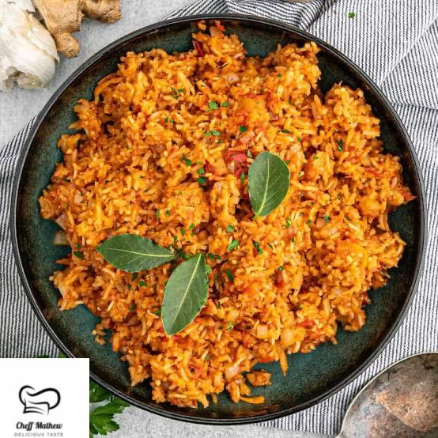

How to cook jollof rice

Description
Jollof Rice is an excellent way to introduce people from around the world to the exotic tastes of Africa. They’re sure to fall in love!
Jollof rice is the highlight of the menu at Nigerian parties and restaurants. And for good reason: this rice dish is delicious and bursting with tropical flavors and aroma.
Ingredients
- 1/2 cup oil
- 1 medium onion sliced
- 4 tablespoons tomato paste
- 4 cloves garlic finely minced
- 1 tablespoon ginger grated
- 2 bay leaves
- 1 tablespoon thyme
- 1 tablespoon curry Powder
- 1 teaspoons salt or add to taste
- white Pepper or black pepper to taste
- 1 tablespoon chicken bouillon powder or 3 cubes
- 4 cups long grain rice rinsed and drained
- 3-4 cups chicken stock
- 1 large tomato sliced
- 1 medium onion sliced
- 2 tablespoons butter at room temperature – optional
Steps
- First, make the tomato-based sauce by blending together the red bell peppers (pimento), tomatoes, onion, and scotch bonnet.
- Heat the cooking oil in a large pan over medium heat, then add the diced onions and let them cook for about 3 minutes or until they are soft.
- Next, add the tomato paste and fry for about 5 minutes. Then stir in garlic, ginger, and bay leaves—leave to cook for 2 more minutes.
- Add the blended sauce and allow the pepper to cook until the water is reduced and the sauce become thick —about 10 to 15 minutes.
- Season with thyme, curry powder, bouillon cubes, salt, and pepper to taste. Cook for another 2 to 5 minutes.
- Add the rinsed rice to the sauce and stir until it is well coated with the sauce. Then add the chicken stock, stir briefly, cover with a tight-fitting lid, and bring to a quick boil over high heat.
- Once it begins to boil—after about 3 to 5 minutes, reduce the heat immediately to low and steam until the rice is done—about 30 minutes.
- Add the butter, sliced tomato, and onions, stir together briefly and turn off the heat. Cover it immediately so that the heat remaining in the rice can steam up the vegetables a little.
- Serve with sweet fried plantains, roasted chicken, or salad.
Remember
Remove the bay leaves once the rice is done. However, if you can’t find it, don’t be tempted to dig through it since over-stirring will cause the rice to break. Just leave it and remove it whenever you find it.